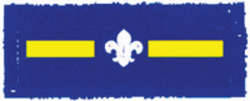

Membership Award
Membership Award Joining In
Joining In ; ; |
If you came up from the Beaver Colony, then you will have received the Beaver to Cubs Moving On award. You can continue to wear this badge throughout your time at Cubs until you gain the next Moving On award. |
 |
The next award is presented to a Cub just as they are moving on to the Scout Troop to show they have learned what Scouts is all about. This will be the first badge you wear on your Scout uniform. |
 |
The next award is for when a Scout moves up to Explorers. Same as the previous two. |
 ; ; |
Awarded to Beaver who has completed all 6 Beaver challenge badges. |
 |
Awarded to a Cub who has completed all 6 Cub challenge badges |
 |
Awarded to a Scout who has completed thier Community, Creative, Fitness, Global, Outdoor & Promise challenge badges. PLUS 2 of the following:
|
 |
Sixer (Cubs) or Patrol Leader (Scouts)You are likely to become a Seconder first of all and then, later, you may be promoted to become a Sixer. The Sixer is in charge of the Six – a bit like a team captain. The Sixer is usually an older Cub with lots of experience and, when you first join, he or she will look after you and make sure you know what you need to be doing.This also applies just the same to Scouts Patrol Leaders and their Assistants. |
|  | Seconder (Cubs) or Assistant Patrol Leader (Scouts)The Seconder or Assistant Patrol Leader is the second in command in a Six or Patrol. and takes over the role of Sixer or Patrol Leader if they are absent. |